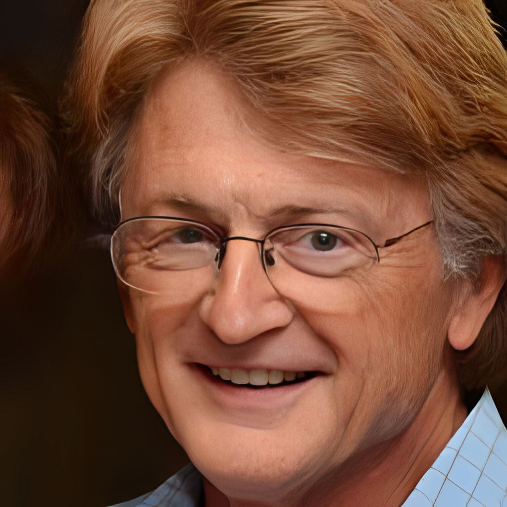
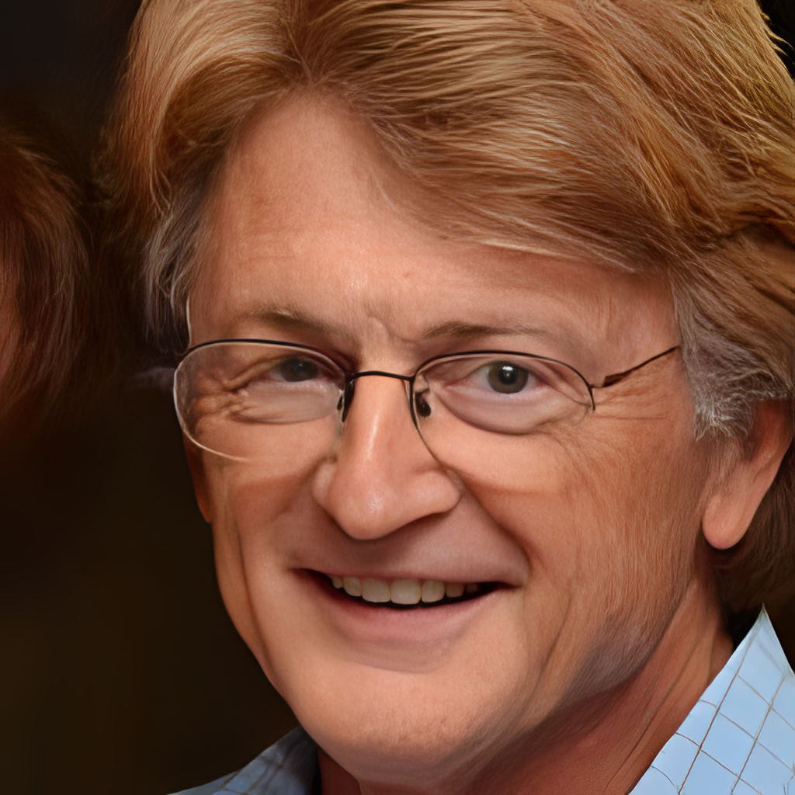

AI Image Enhancement Application
This dissertation explores the transformative power of Enhanced Super-Resolution Generative Adversarial Networks (ESRGAN) in upgrading low-resolution images to high-definition clarity, bridging the gap between current capabilities and the high demand for accessible, high-quality image enhancement.
Key Features
- Utilization of the cutting-edge ESRGAN model for superior image enhancement.
- User-friendly application interface for seamless interaction.
- High-quality results transforming blurry images into sharp, clear visuals.
- Accessible and free service for enhancing personal and professional images.
- Future expansion possibilities including dedicated server hosting for improved performance.
How It Works
At the heart of the AI Image Enhancement Application is the Enhanced Super-Resolution Generative Adversarial Network (ESRGAN), a cutting-edge model that transforms low-resolution images into stunningly clear and detailed high-resolution versions. This sophisticated process begins when a user uploads a low-resolution image to the application. Here's a closer look at the magic behind the scenes:
- Image Upload: Users start by uploading an image that they wish to enhance. The application accepts images in various formats and sizes, making it versatile and user-friendly.
- Preprocessing: Once uploaded, the image undergoes preprocessing, where it is analyzed and prepared for enhancement. This step may involve adjusting the image size, normalizing pixel values, and converting the image into a format that the ESRGAN model can process efficiently.
- Enhancement Processing: The preprocessed image is then fed into the ESRGAN model. Utilizing deep learning algorithms, the model predicts and fills in missing details to upscale the image. This involves analyzing the image's textures, edges, and patterns to generate a higher resolution version that retains the essence of the original while significantly improving its clarity and detail.
- Postprocessing: After the ESRGAN model has done its work, the enhanced image undergoes postprocessing. This step fine-tunes the image to ensure optimal quality and prepares it for display or download by the user. Adjustments made during postprocessing can include color correction, sharpening, and any final touches needed to achieve the best visual result.
- Delivery: The final step is the presentation of the enhanced image. Users can preview the before and after versions directly in the application, providing an immediate and striking comparison. The high-resolution image is then available for download, ready to be used in various applications or shared with others.
This entire process, from upload to delivery, is streamlined and automated, requiring no manual intervention from the user beyond the initial upload. By leveraging the power of AI and deep learning, the AI Image Enhancement Application democratizes access to professional-grade image enhancement, making it possible for anyone to breathe new life into their photos.
Enhancement Gallery
Discover the transformative effects of our AI Image Enhancement Application through our gallery of before-and-after images. Just hover over them!
 
